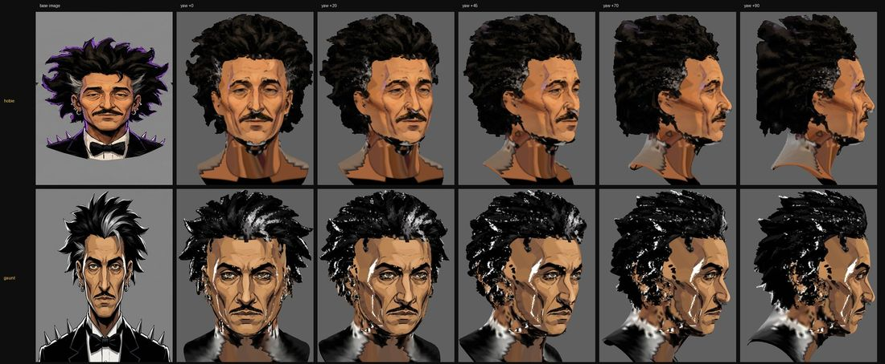
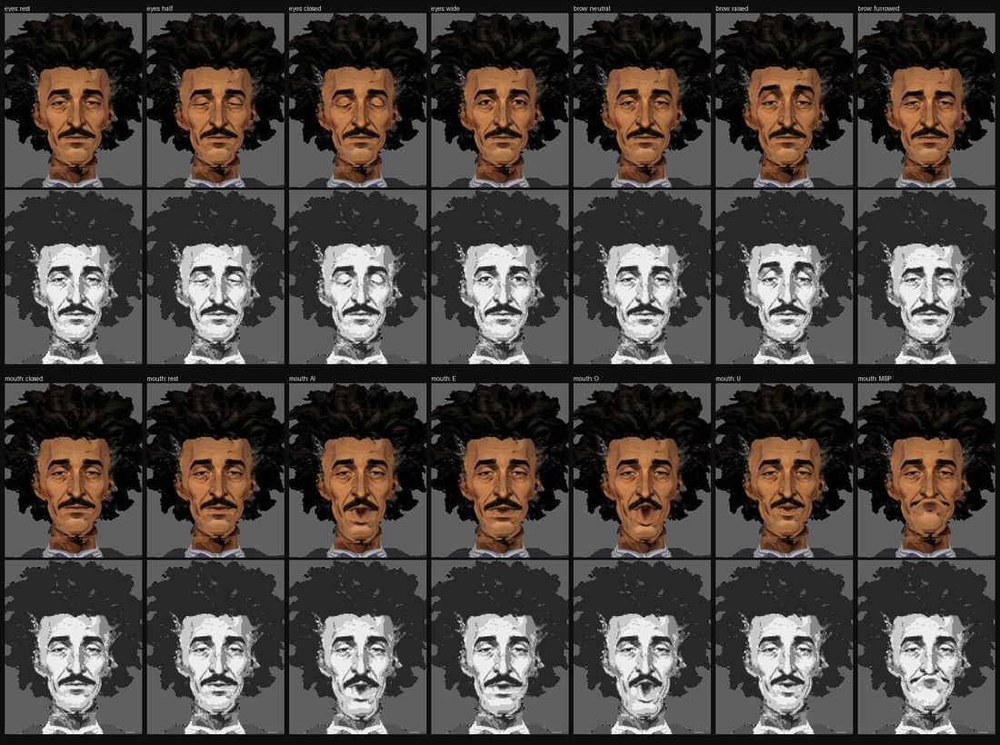
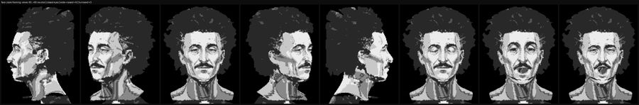
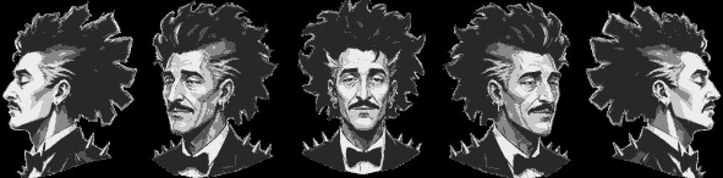
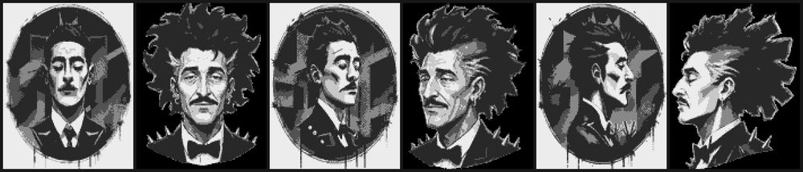

anima
A few painted views of a character become a head you can turn and give expressions, drawn as a five-grey pixel-art sprite sheet.
- Kind
- Art and tools
- Where
- Open source
- Status
- research prototype
- Links
- Repository
The problem
Asked to hold an exact head angle, keep a character's likeness and draw in pixel art all at once, an image model could do none of them reliably. Asking for 45 and 90 degrees returned the same head.
What was built
An offline pipeline that splits the job in three: a mesh and a camera decide where, the paintings projected onto the mesh decide what it looks like, and a twenty-line quantiser decides how it is drawn.
- 21 of 21acceptance checks passed by the first character; the others do not pass yet
- 420frames in its sprite sheet: 5 views by 84 expression states
- 5greys in the palette, and no dithering
The idea
Geometry decides where. Painting decides what it looks like. Quantising decides how it is drawn.
A camera transform cannot get an angle wrong, so the angle comes from a 3D head and a camera. Nothing about the character is drawn by code: the paintings are projected onto the head as a texture. The pixel art is one small function: raise the contrast, shrink to the cell grid, take the nearest of five greys.

Turning and expressions
Once the paintings sit on a head, turning it is a camera move. Expressions are blendshapes on the same mesh: four eye states, three brow states and seven mouth states, fourteen in all, each rendered in colour and then quantised.

The sprite sheet
The output is an atlas of 420 frames, five views by 84 combinations of eyes, brows and mouth, each 115 by 146 cells in five greys. A test checks that every opaque pixel in the atlas is one of the five palette values. The palette and the idea of drawing a scene in plain square cells came from measuring the canvas on the Moonshot AI careers page.


What it got wrong first
Repainting the missing views with Stable Diffusion and ControlNet held the pose and lost the person: the result was someone else. That result is what moved the project from painting five views to mapping the art it already had onto a mesh. Hair turned out to be a separate problem from the face, so it became a separate object, built from the hair's outline in each painting.

Status
A research prototype. The offline pipeline works end to end for one character and passes its own 21 checks. The same code does not yet pass on the other test characters: face height and segmentation are the weak links. The runtime that would play the sprites, with idle animation and a mouth driven by speech, is specified and not written.